Le foie (1,5 kg) : métabolisme, usine de production, stockage, alcool, biotransformation. RS l'a annoncé au premier cours : « un cours sur le foie, sur la consommation d'alcool, sur comment il dégrade l'alcool, pourquoi vous avez mal à la tête le lendemain », pourquoi on ne boit pas avec certains médicaments, pourquoi l'alcool frelaté rend aveugle. Molécules du listing : éthanol, acétaldéhyde, acide acétique, méthanol, formol, acide formique, éthylène glycol, acide oxalique. La dernière dia du prof donne des « questions tuyaux » pour l'examen : elles sont toutes dans l'onglet « Questions du prof ». Les épreuves fonctionnelles hépatiques sont facultatives.
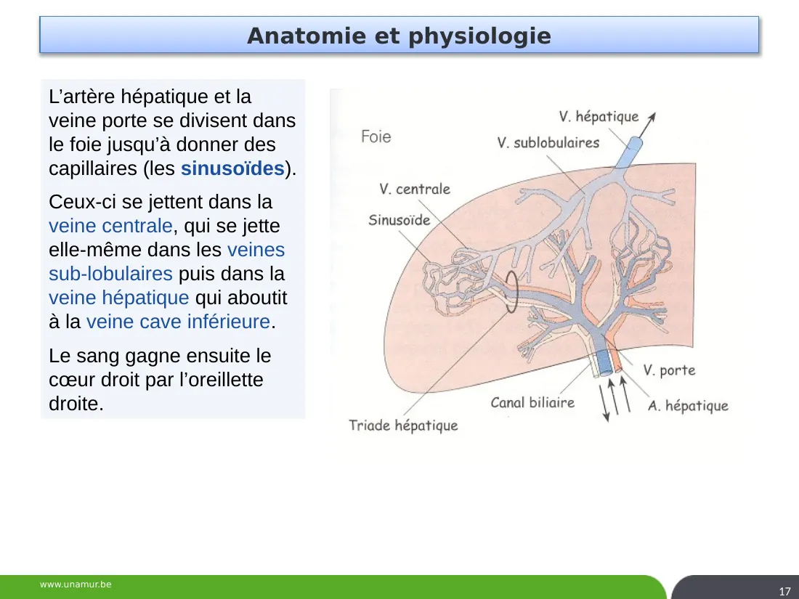
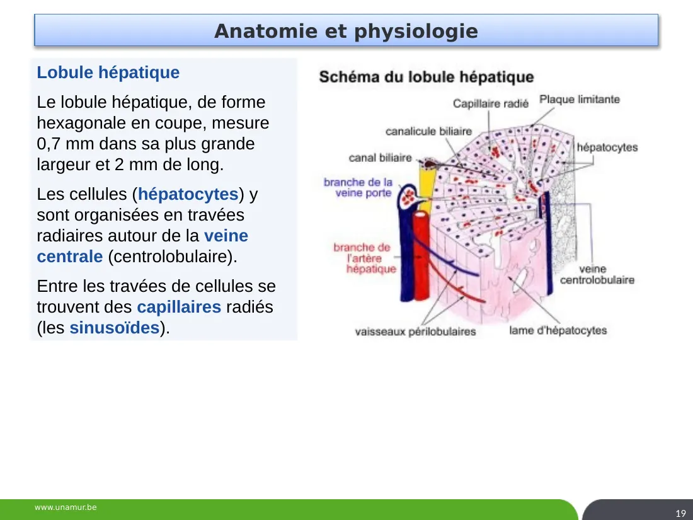
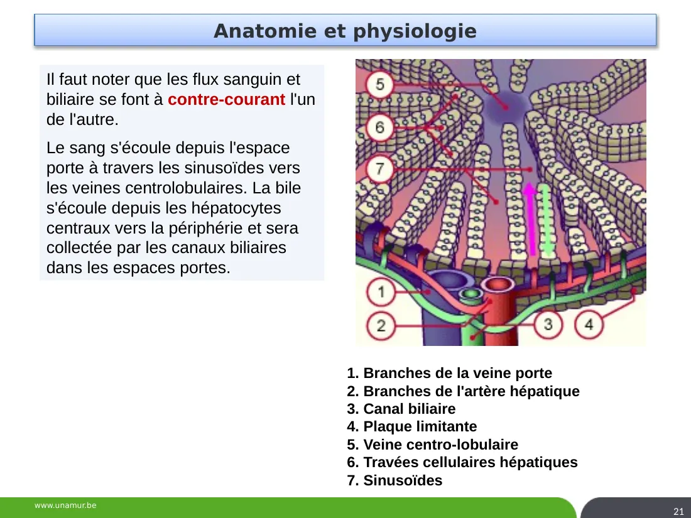
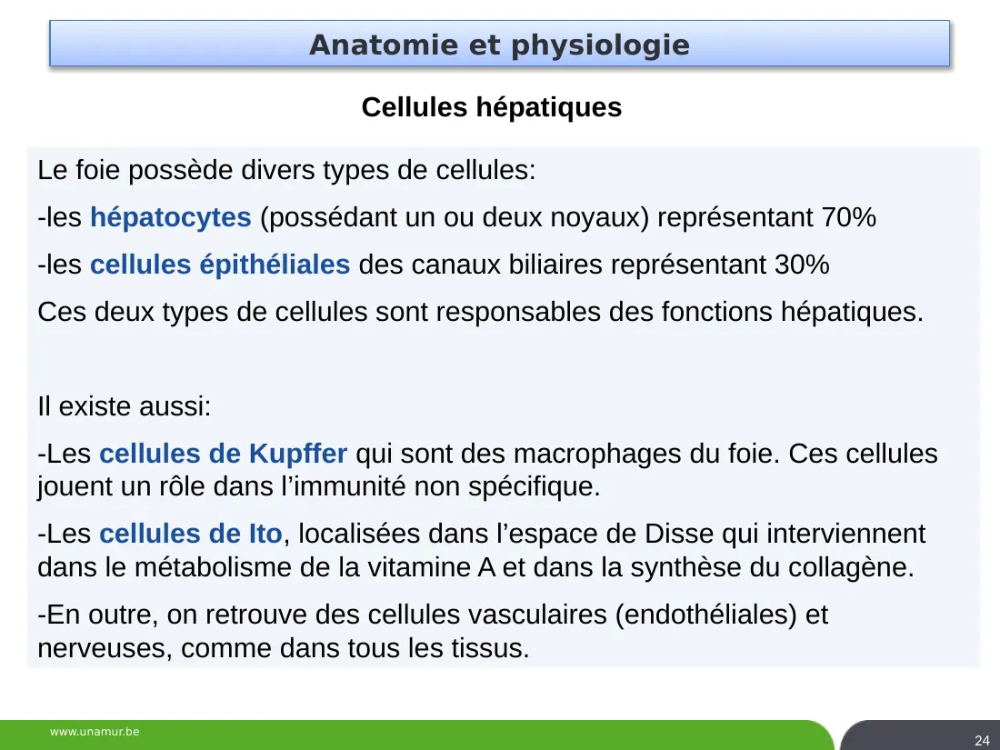
Plus grosse glande (≈ 1,5 kg), sous la coupole diaphragmatique droite. ≈ 1,5 L de sang par minute : veine porte 75 % (nutriments de l'intestin) + artère hépatique 25 % (O₂). Trajet : espace porte → sinusoïdes → veine centrolobulaire → veines hépatiques → veine cave inférieure.
Hexagonal ; à chaque coin un espace porte avec la triade (artère hépatique, veine porte, canal biliaire). Le sang va de la périphérie vers la veine centrale ; la bile va dans l'autre sens, vers les canaux biliaires de l'espace porte : contre-courant.
En sens inverse : le sang de l'espace porte vers la veine centrolobulaire par les sinusoïdes ; la bile, sécrétée dans les canalicules entre hépatocytes, vers le canal biliaire de l'espace porte.
Hépatocytes (~70 %, 1 ou 2 noyaux) ; cholangiocytes (canaux biliaires) ; cellules de Kupffer = macrophages des sinusoïdes (immunité, GR vieillis) ; cellules d'Ito dans l'espace de Disse (stockent la vitamine A, produisent le collagène de la fibrose) ; cellules endothéliales.
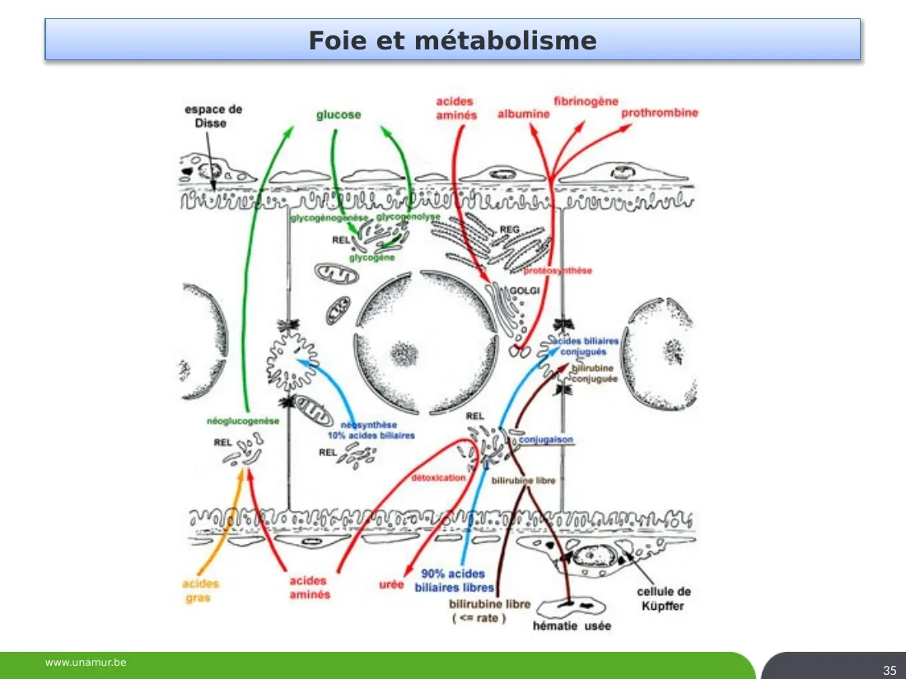
Phase absorptive : il brûle surtout du glucose. À jeun : surtout des acides gras (β-oxydation), qui fournissent aussi le NADH nécessaire à la néoglucogenèse.
Glycémie à jeun 0,7-0,9 g/L. Après un repas, captation du glucose indépendante de l'insuline (GLUT-2) → glycogène, glycolyse, pentoses (NADPH), acides gras. À jeun : glycogénolyse puis néoglucogenèse (lactate, glycérol, acides aminés), sous glucagon.
Il possède la glucose-6-phosphatase : il retire le phosphate du glucose-6-P, qui peut alors sortir de la cellule. Le muscle n'a pas cette enzyme : son glycogène ne sert qu'à lui.
Après un repas : TAG, phospholipides, VLDL exportées ; synthèse de 90 % du cholestérol (≈ 1 g/j). À jeun : β-oxydation des AG venus du tissu adipeux → corps cétoniques pour les autres tissus (le foie ne les utilise pas).
Pas de stockage des AA. Les ramifiés (Val, Leu, Ile) et aromatiques sont renvoyés dans le sang ; les autres servent à la synthèse des protéines (albumine, facteurs). À jeun : AA glucoformateurs → néoglucogenèse ; cétogènes → corps cétoniques. L'ammoniac toxique est éliminé sous forme d'urée (cycle de l'urée, foie) excrétée par le rein.
Protéines plasmatiques : albumine, transferrine, haptoglobine, céruloplasmine, complément, facteurs de coagulation, VLDL et HDL, protéines de la phase aiguë. Pas les γ-globulines (plasmocytes). Cholestérol, bile (500-1000 mL/j : sels biliaires glycocholate et taurocholate), hormones/précurseurs (angiotensinogène, kininogène, somatomédines sous GH, 25-hydroxylation de la vitamine D), créatine.
Sous IL-1, IL-6, TNF-α : ↑ CRP, fibrinogène (vitesse de sédimentation), haptoglobine, orosomucoïde. ↓ albumine et transferrine (protéines négatives).
Stocke vitamines A, B12, acide folique, minéraux (fer, cuivre), glycogène. Stockage en défaut dans la cirrhose ; à l'inverse, maladies de surcharge (hémochromatose : fer ; Wilson : cuivre). Les cellules de Kupffer détruisent bactéries et GR vieillis.
Molécules à dessiner : éthanol CH₃–CH₂–OH → (ADH, NAD⁺) acétaldéhyde (éthanal) CH₃–CHO → (ALDH, NAD⁺) acide acétique CH₃–COOH → (acétate thiokinase) acétyl-CoA → Krebs ou synthèse d'acides gras. Voie secondaire inductible : MEOS (cytochrome P450, NADPH + O₂), qui se développe chez le buveur régulier.
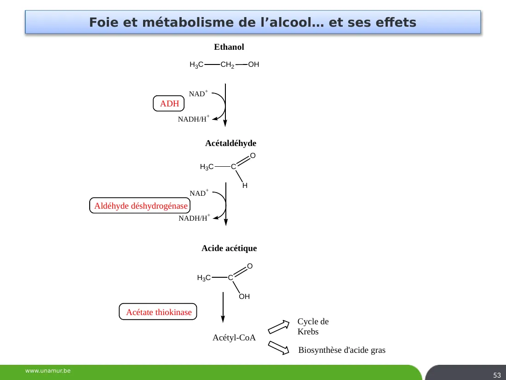
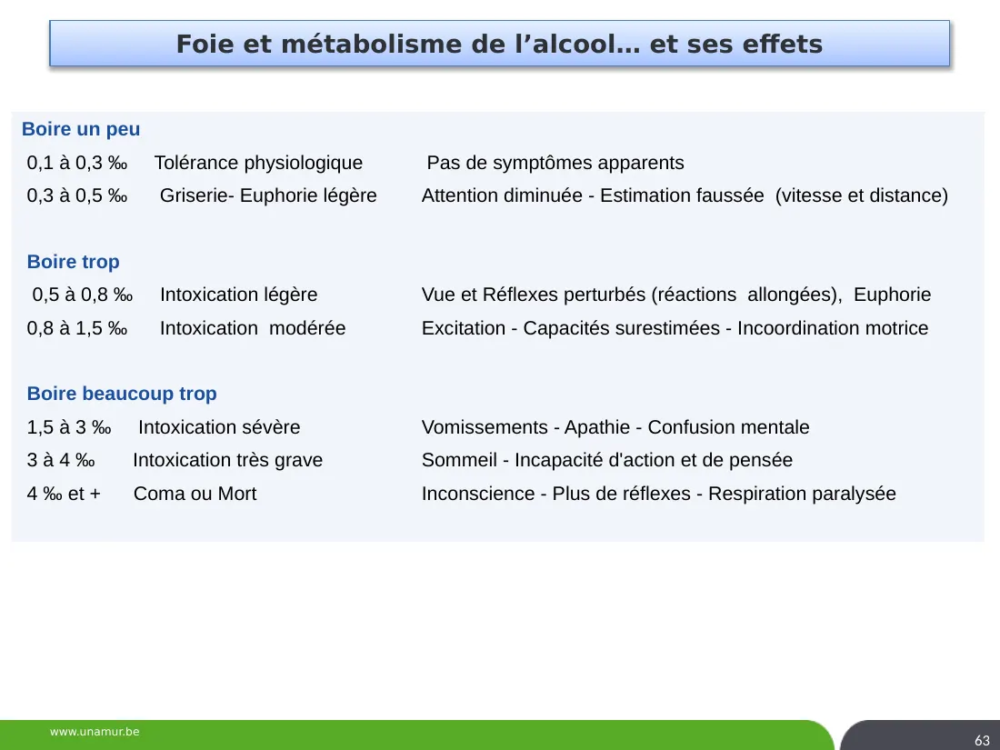
Rapide (pic en 60-90 min) ; à jeun, en moins de 30 min. Accélérée par le chaud (vin chaud) et le CO₂ (champagne) ; ralentie par un repas (gras), qui garde l'alcool dans l'estomac où une ADH gastrique en dégrade une partie.
L'ADH est saturée : la vitesse d'élimination est constante (≈ 0,15 g/L/h), quelle que soit la quantité bue. Boire plus ne fait pas éliminer plus vite. Différences génétiques d'ADH/ALDH (populations asiatiques) et isoenzymes moins actives chez la femme.
La quantité éliminée par heure est fixe (≈ 0,15 g/L/h) car l'enzyme est saturée ; elle ne dépend pas de la concentration. Ex. : 1,5 g/L met environ 10 h à disparaître.
L'acétaldéhyde est directement cytotoxique : c'est lui le principal responsable des effets (rougeur, nausées, maux de tête). L'éthanol, très lipophile, passe la barrière hémato-encéphalique et renforce le GABA-A (lien avec ch2.10). Il inhibe la vasopressine → polyurie → déshydratation. Gastrite, vomissements.
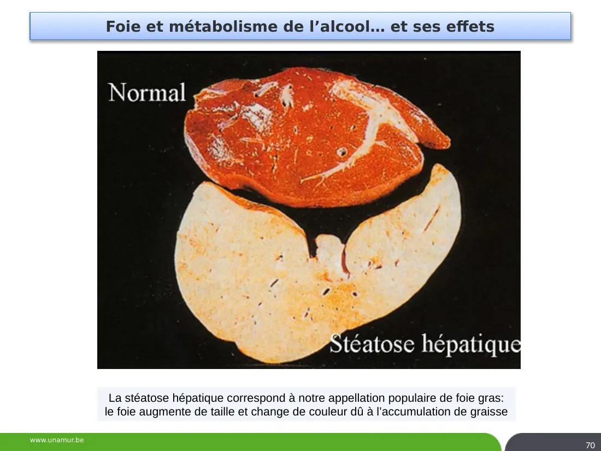
Excès d'acétyl-CoA et de NADH → synthèse d'acides gras → stéatose (foie gras, réversible à l'arrêt) → hépatite alcoolique → fibrose (cellules d'Ito, collagène) → cirrhose (irréversible). Signes : ictère, angiomes, gynécomastie, hypertension portale (varices), ascite, œdèmes, troubles de la coagulation.
Le foie ne fabrique plus assez d'albumine → pression oncotique ↓ → l'eau sort des vaisseaux ; en plus, l'hypertension portale pousse le liquide dans le péritoine.
Pancréatite, épilepsie, polyneuropathie. Dénutrition : encéphalopathie de Wernicke (carence en vitamine B1, thiamine), pellagre (vitamine PP). Alcool et grossesse : syndrome d'alcoolisation fœtale.
Il en manque (apport, absorption et stockage hépatique diminués) ; la thiamine est un coenzyme du métabolisme du glucose. Perfuser du glucose sans B1 peut déclencher une encéphalopathie de Wernicke : on donne la B1 avant ou avec le glucose.
Même enzyme, molécules toxiques : l'ADH transforme aussi l'éthylène glycol et le méthanol en acides toxiques. Éthylène glycol HO–CH₂–CH₂–OH → glycolaldéhyde → acide glycolique → acide glyoxylique → acide oxalique HOOC–COOH (cristaux d'oxalate : rein). Méthanol CH₃OH → formaldéhyde (formol) HCHO → acide formique HCOOH (acidose, cécité).
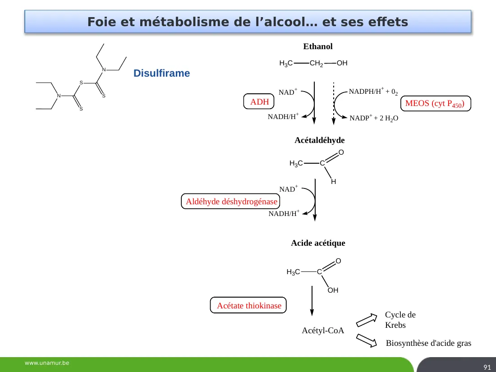
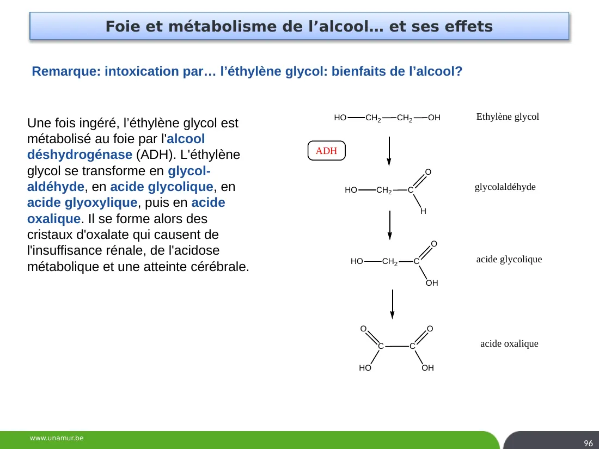
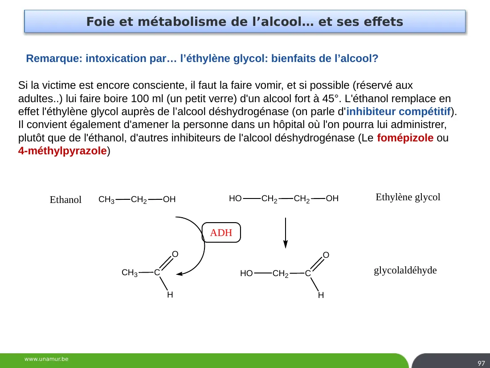
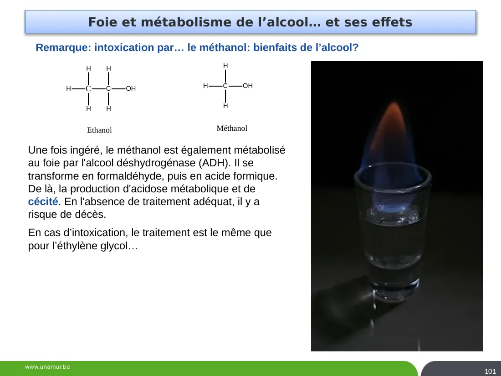
Le disulfirame (Antabuse®, métabolite DEDTC) inhibe l'aldéhyde déshydrogénase → l'acétaldéhyde s'accumule si on boit : rougeur du visage, nausées, vomissements, tachycardie, hypotension. Utilisé dans le sevrage. D'autres médicaments ont un effet antabuse : c'est pour ça qu'on ne boit pas avec certains traitements (ex. métronidazole).
Un médicament qui bloque l'ALDH (ou provoque le même effet) : avec de l'alcool, l'acétaldéhyde s'accumule et donne une réaction très désagréable (flush, nausées, tachycardie, hypotension).
Goût sucré : intoxication des enfants et animaux ; 30 mL peuvent tuer un adulte. Ivresse, puis tachycardie, puis insuffisance rénale (cristaux d'oxalate) et acidose. Drames de sirops contaminés (Haïti 1996).
Présent en traces dans les boissons fermentées (dégradation de la pectine) ; point d'ébullition plus bas (64 °C vs 78 °C) : il part dans la « tête de distillation », à éliminer. Distillations artisanales à risque (Mexique, Indonésie, Turquie…). Formol puis acide formique → acidose métabolique et cécité.
Donner de l'éthanol (l'ADH le préfère et ne transforme plus le toxique) ou mieux le fomépizole (4-méthylpyrazole), inhibiteur de l'ADH, à l'hôpital ; dialyse si besoin. Le méthanol ou le glycol non transformés sont éliminés sans former les acides toxiques.
Urgence : bloquer l'ADH par compétition (éthanol) ou inhibition (fomépizole) pour empêcher la formation d'acide formique ou oxalique, corriger l'acidose, dialyse si nécessaire.
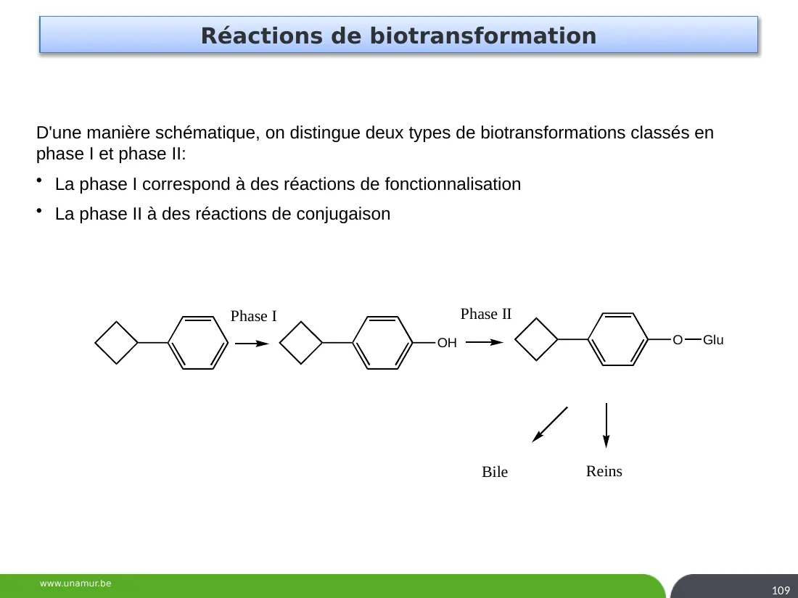
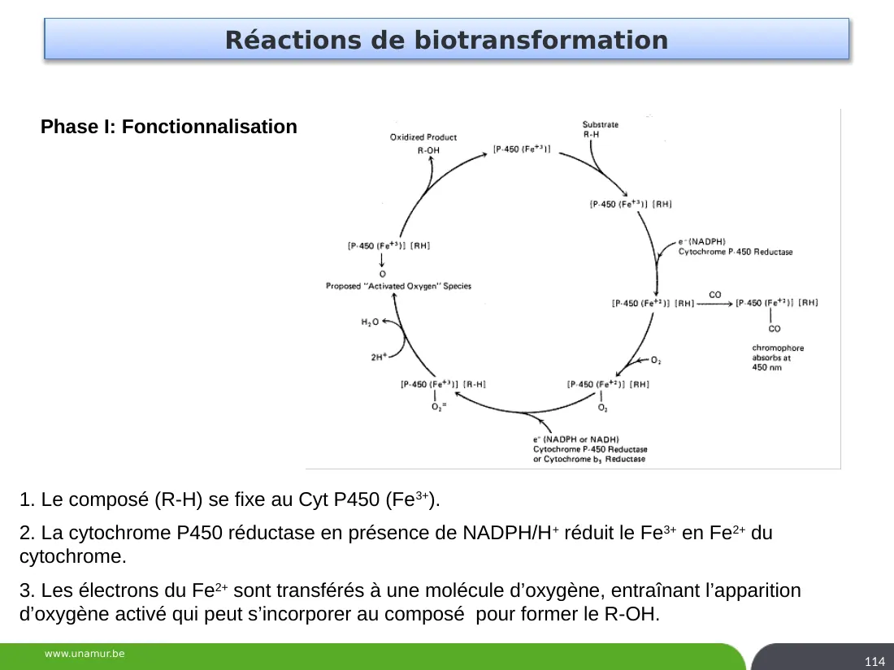
But : rendre les substances lipophiles plus hydrosolubles pour les éliminer. Phase I = ajouter ou démasquer un groupe fonctionnel (–OH…) : surtout les cytochromes P450 (hème + Fe, réductase avec NADPH, O₂), mais aussi monooxygénases à flavine, MAO, ADH/ALDH, estérases. Peut donner des métabolites instables (époxydes).
Accrocher une grosse molécule polaire sur le groupe créé : acide glucuronique (UDP-glucuronyltransférase, comme la bilirubine), sulfate, glycine, méthyle, acétate, glutathion (glutathion-S-transférase). Défauts de glucuronoconjugaison : Gilbert (léger, bénin) et Crigler-Najjar (type I : enzyme absente, ictère grave du nouveau-né, photothérapie 10-12 h/j ; type II : partiel).
Phase I : on crée ou démasque une fonction (oxydation par P450, réduction, hydrolyse). Phase II : on conjugue cette fonction à un groupe polaire (glucuronide, sulfate, glutathion…) pour l'excréter.
Rein : substances hydrosolubles. Bile : substances conjuguées, plus grosses (bilirubine, stéroïdes, métaux lourds, nombreux médicaments) → intestin ; un foie malade peut donc entraîner un surdosage. Effet de premier passage : un médicament pris par la bouche traverse le foie (veine porte) avant d'atteindre la circulation générale et peut y être largement métabolisé.
facultatif Facteurs de coagulation : chutent vite (tendance hémorragique). Albumine : demi-vie longue (15-19 j) → marqueur tardif d'insuffisance hépatique chronique. Pseudo-cholinestérases ↓. Électrophorèse dans la cirrhose : albumine ↓, γ-globulines ↑.
facultatif Cholestase (bile bloquée) : bilirubine conjuguée ↑, phosphatases alcalines ↑ (aussi l'os, l'enfant), γ-GT ↑ (la plus sensible). Cytolyse (hépatite, surdosage de paracétamol) : ALAT (cytoplasme, spécifique du foie), ASAT (aussi cœur et muscle), GLDH (mitochondrie : lésions sévères), LDH.
Pas d'enregistrement de ce chapitre (cours de RS en 2026). Ce qui suit vient de ta transcription du 21/09/2026, où RS présente son cours, et de la dia « questions tuyaux ».
Les « questions tuyaux » de la dia 137, telles que RS les a écrites, avec un corrigé construit à partir de ses dias.
1. Sur base d'un schéma, expliquez le métabolisme de l'éthanol, ses conséquences à court et à long terme, et le principe de l'effet antabuse.
HO–CH₂–CH₂–OH : que savez-vous ?
Un touriste revient d'un voyage où il a bu un alcool artisanal ; le lendemain, il voit flou et respire vite. Que s'est-il passé et que faire ?